WinForms End-User Report Designer Keyboard Shortcuts
Operations with XRControls
Copy/Paste XRControl
| Key | Action |
|---|---|
| Ctrl+C | Copy the selected XRControl. |
| Ctrl+V | Paste the copied XRControl. |
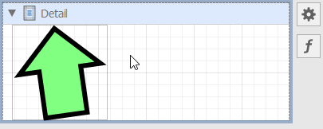
Cut XRControl
| Key | Action |
|---|---|
| Ctrl+X | Cut the selected XRControl. |
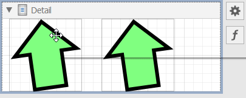
Delete XRControl
| Key | Action |
|---|---|
| Delete | Remove the selected XRControl. |
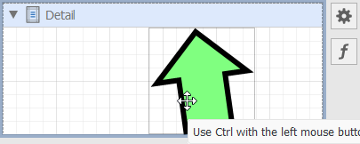
Undo / Redo an Action
| Key | Action |
|---|---|
| Ctrl+Z | Undo the last operation. |
| Ctrl+Y | Repeat the last undone operation. |
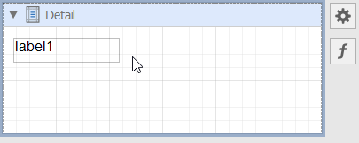
Slide XRControl to the End of the Area with a Minimum Indent
Use arrow keys to slide XRControl to the end of the area with a minimum indent:
| Key | Action |
|---|---|
| Up | Slide XRControl up. |
| Down | Slide XRControl down. |
| Left | Slide XRControl left. |
| Right | Slide XRControl right. |
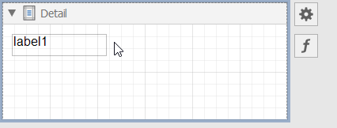
Shift XRControl Pixel by Pixel
Use Ctrl + arrows to shift XRControl pixel by pixel:
| Key | Action |
|---|---|
| Ctrl+Up | Shift XRControl one pixel upward. |
| Ctrl+Down | Shift XRControl one pixel down. |
| Ctrl+Left | Shift XRControl one pixel to the left. |
| Ctrl+Right | Shift XRControl one pixel to the right. |
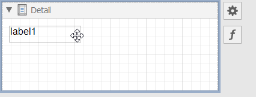
Resize XRControl to the Widest/Highest Possible Value
| Key | Action |
|---|---|
| Shift+Up | Move the XRControl's bottom border to the lowest possible value. |
| Shift+Down | Move the XRControl's bottom border to the highest possible value. |
| Shift+Right | Move the XRControl's right border to the widest possible value. |
| Shift+Left | Move the XRControl's right border to the narrowest possible value. |
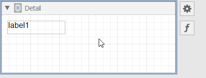
Resize XRControl Pixel by Pixel
| Key | Action |
|---|---|
| Ctrl+Shift+Up | Move the XRControl's bottom border upward by one pixel. |
| Ctrl+Shift+Down | Move the XRControl's bottom border downward by one pixel. |
| Ctrl+Shift+Left | Move the XRControl's right border to the left by one pixel. |
| Ctrl+Shift+Right | Move the XRControl's right border to the right by one pixel. |
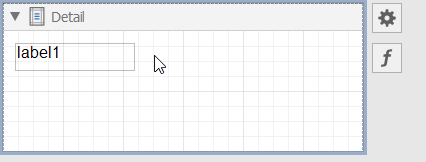
Clone XRControl
| Key | Action |
|---|---|
| Ctrl+Drag | Clone XRControl. |
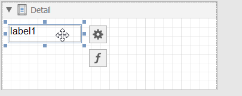
Select Multiple XRControls
| Key | Action |
|---|---|
| Ctrl+Click or Shift+Click | Select/unselect multiple XRControls. |
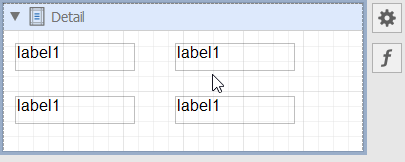
Rotate XRShape
| Key | Action |
|---|---|
| Ctrl+Drag | Rotate XRShape. |
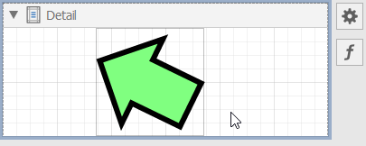
Operations with the Field List
| Key | Action |
|---|---|
| Drag a table | Add XRTable with bindings to all data fields. |
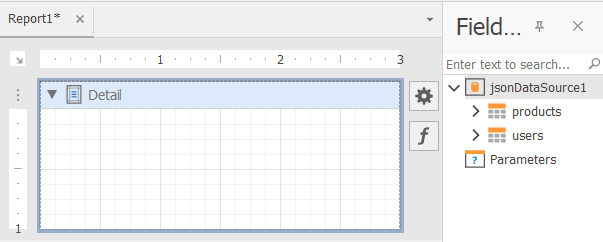
| Key | Action |
|---|---|
| Shift + Drag a table | Add XRTable with all data field names. |
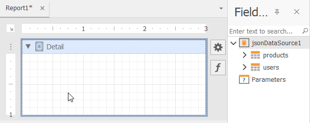
Operations with the End-User Report Designer
| Key | Action |
|---|---|
| F4 | Switch to the Designer tab. |
| F5 | Switch to the Preview tab. |
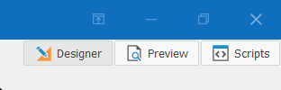
| Key | Action |
|---|---|
| Ctrl+L | Save all opened report layouts. |
| Ctrl+S | Save the selected report layout. |
| Ctrl+O | Open a .repx report. |
| Ctrl+N | Create a new report. |
| Ctrl+W | Create a new report with the Wizard. |
| Ctrl+ScrollDown | Zoom in the selected report. |
| Ctrl+ScrollUp | Zoom out the selected report. |
| Ctrl+0 | Set zoom to 100%. |